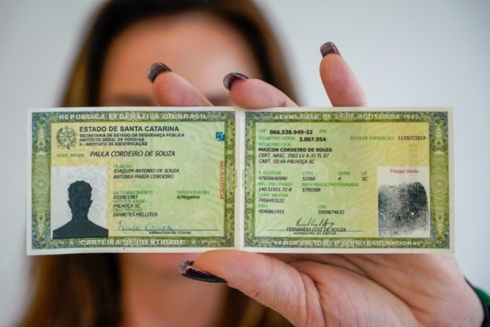

Título de Eleitor – Como Solicitar?

Ser brasileiro(a) ou naturalizado(a).
Ter pelo menos 16 anos, sendo que a partir dos 18 anos o voto é obrigatório.
Possuir um documento de identificação oficial, como RG, carteira de trabalho, carteira profissional, passaporte, certificado de reservista ou carteira nacional de habilitação.
Os documentos listados abaixo devem estar digitalizados(foto)
Documento de identificação oficial com foto (original ou cópia).
Certifique-se de que o documento esteja válido, ou seja, não esteja vencido.
Comprovante de residência recente (original e cópia). Pode ser uma conta de luz, água, telefone, etc, em seu nome ou no nome dos seus pais, desde que você comprove a residência.
Geralmente, o comprovante de residência deve estar no nome do solicitante ou de um parente próximo, como pais ou cônjuge. Se o comprovante não estiver no seu nome, é importante ter um documento que comprove a relação familiar, como certidão de casamento ou certidão de nascimento.
1º - Acessar o site tse.jus.br

2º - Deve rolar a tela até o final e procurar a opção de (Tudo sobre o Título Eleitoral). Clique nesta opção.

3° - Deve clicar no botao azul

4º - Logo após clicar irá aparecer um novo site, você deve procurar a opçâo de (autoatendimento Eleitoral).

5° - O que te levará para um novo site, onde você ira selecionar o estado para onde quer tirar o título e em seguida clicar em próximo.

6º - Nesta parte você poderá ver os documentos necessários novamente e como deverão ser digitalizados.
- Foto segurando um documento (fotografia do requerente exibindo, ao lado de sua face, o documento oficial de identificação);
- Documento oficial BRASILEIRO de identificação (carteira de identidade, carteira profissional emitida por órgão criado por lei federal ou passaporte).
- Comprovante de residência atualizado;
- Certificado de quitação de serviço militar (para homens, no ano em que completam 19 anos).
Confira o tutorial para tutorial para se alistar.
Você pode clicar em próximo novamente.

7º - Agora você deve preencher os campos com as suas informações.